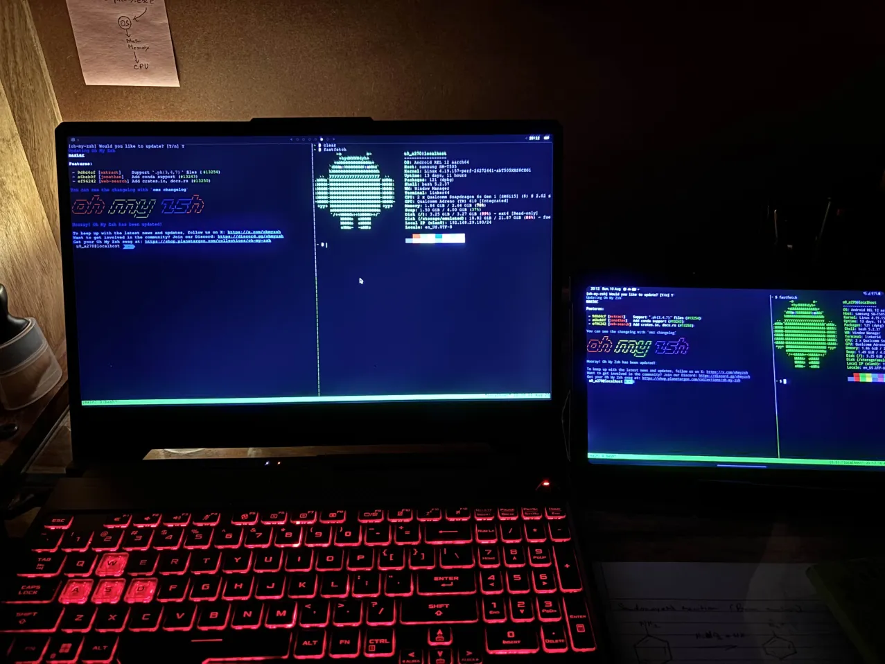

 Breathe new life into an old tablet or spare laptop by transforming it into a dedicated secondary terminal for your main computer.
Using the power of ssh, you can create a secure command-line connection, giving you a separate screen for monitoring logs, running build scripts, or managing system resources without cluttering your primary workspace.
Supercharge this setup with a terminal multiplexer like tmux, which enables persistent sessions. This allows you to start a task on your main laptop, then walk away and use your tablet to attach to the very same session, monitoring or interacting with the process seamlessly. It’s a simple yet powerful way to boost productivity and achieve true task mobility across your devices.